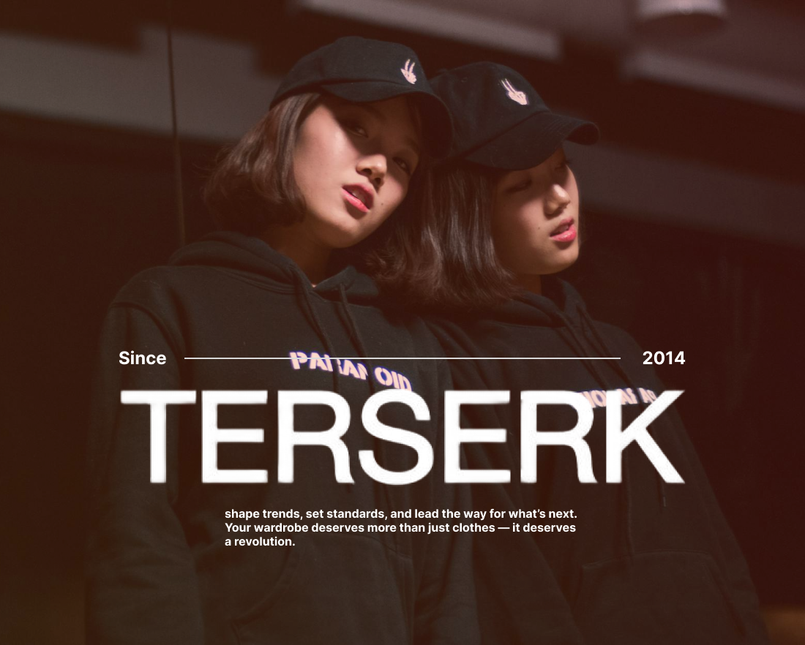
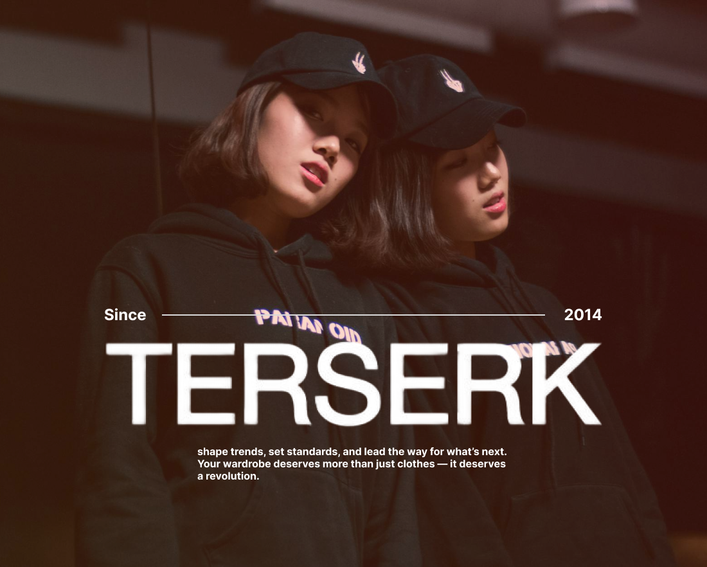

Terserk
Overview
This project involved designing branding and marketing materials for a contemporary fashion brand called TERSERK. My contributions included creating the brand identity, motion graphics, ad campaigns, and event promotion materials. The goal was to communicate the brand’s bold, youthful vibe while delivering visually captivating content across digital and print platforms.
Objective
To establish a dynamic and bold brand identity that appeals to fashion-forward consumers. To boost engagement and sales through eye-catching social media campaigns, ads, and event promotions. To enhance brand presence through high-impact motion graphics and creative visual assets.
My Role
Designing and animating motion graphics for social media ads, product teasers, and video content f or Instagram and Facebook. Developing digital ads, flyers, and banners for various campaigns, including seasonal launches and exclusive sales.
Visuals
Results
The social media motion graphics boosted Instagram engagement by 40% and increased shares by 25%, resulting in higher visibility and follower growth. Motion graphic ads led to a 35% increase in online sales during the campaign period, with particular success in attracting first-time buyers.
Gallery
 
